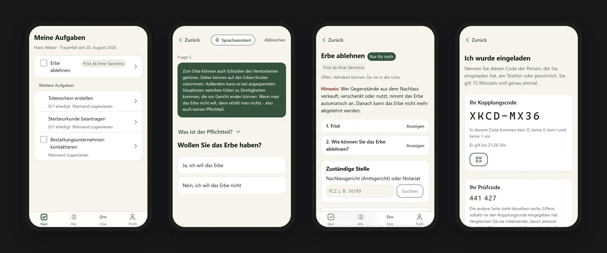
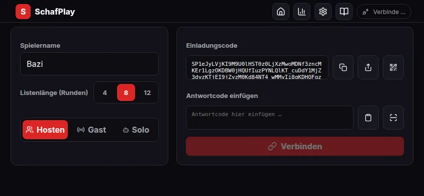

Working student at VectorM.Sc. Informatics at TUM, graduating 2028Up to 18 h/week · Munich
Emanuel
Medina
I build software that lets carmakers test driving features in simulation instead of on the road, and I have done it at Vector for over five years alongside my studies. In my own time I build apps people can actually use, from a card game that needs no server to an encrypted helper for grieving families.
- C#
- Java
- TypeScript
- Python
- C/C++
- Unity
- React
- PyTorch
- WebRTC
Move your pointer: the robot arm works out its own joint angles. Tap or click an object on a pedestal to jump to that part of my story.
00 At a glance
The short version
Experience
- VSceneCreator2024 – now3D editor for the roads driving simulations run on
- DYNA42021 – 2024Simulator for testing driving functions on a virtual road
Projects
- LoveNeverDies2026Encrypted helper for families after a death
- SchafPlay2026Bavarian card game that needs no server
- How robot arms learn to reach2024Bachelor thesis · machine learning
- FitFinderLiveWardrobe organizer for the iPhone
- 6D object pose estimation2026Robotics seminar paper
- Reaching around obstacles2023Seminar paper · inverse kinematics
01 Experience · Vector Informatik · Nov 2024 – now
VSceneCreator
Working Student Software Engineer · Unity / C#
A 3D editor for building the roads and junctions that driving simulations run on.
- Made switching a scene into edit mode up to 70% faster by loading only the objects that are visible or actually needed.
- Designed Explore Mode, a read-only way to look around a road scene. It now serves as a preview for licensed users and a friendlier first experience for free users.
- Shipped alpha versions 0.1 → 0.4 together with Product Management, including 10% faster file loading and a progress bar instead of a frozen screen.
- Unity
- C#
- OpenDRIVE
- Rider
02 Experience · Vector Informatik · Mar 2021 – Oct 2024
DYNA4
Working Student Software Engineer · Java / Eclipse RCP
A simulator carmakers use to test driving functions on a virtual road before testing on a real one.
- Worked on 5 major releases (5.0 → 9.0): new features, fixes for critical bugs and a better interface.
- Designed a way for engineers to give measurement signals readable names, with its own file format, saving and loading, and automatic checks that offer one-click fixes.
- Built tools that find files no longer used anywhere in a project and list every unsaved change in one place, and reworked the view engineers use to inspect recorded signals.
- Java
- Eclipse RCP
- JUnit
- Jenkins
03 Project · Aug 2026 · Legal Loves Tech Hackathon
LoveNeverDies
Bavarian Ministry of Justice challenge · React / TypeScript / Supabase
An app that guides grieving families through the paperwork and deadlines after a death. Built in ten days with a team of lawyers. Everything is encrypted on the family’s own devices, so not even the server can read it.


- React
- TypeScript
- Supabase
- Post-quantum encryption
04 Project · 2026 · Live v1.0.0
SchafPlay
React / TypeScript / WebRTC
Schafkopf, the Bavarian card game, to play solo or with a friend on the same Wi-Fi. No accounts and no server: two devices connect directly through a QR code or link, and computer players fill the other seats. Each device only ever receives its own cards, so nobody can peek.


- React
- TypeScript
- WebRTC
- Offline app (PWA)
05 Bachelor thesis · TUM · 2024
How robot arms learn to reach
Learning-Based Inverse Kinematics · Python / PyTorch
To grab something, a robot arm has to work out how to bend each joint. I compared neural networks that learn this. The simplest one won: it solved all 10,000 test cases, in about 0.16 milliseconds each.
It built on my 2023 seminar paper, a survey of the classic step-by-step methods that let an arm reach a target without hitting obstacles around it.
06 Side project · Live
FitFinder
Wardrobe organizer · iPhone web app


Your whole wardrobe on your phone: photograph each piece once, sort it, put outfits together and pick today’s in seconds. Works offline.
- TypeScript
- Vite
- Offline-first
07 Research · Robotics seminar · Apr – Jul 2026
6D object pose estimation
Seminar paper in IEEE format · TUM
How can a robot tell exactly where an object is and how it is turned, just from a camera image? I surveyed the methods, from classic geometry to the newest AI models that recognise objects they have never seen.
My conclusion: the most practical systems combine both. A large model finds the object once, then a fast tracker follows it frame by frame.
- Robotics
- Computer vision
- Foundation models
08 Education
Technical University of Munich
- M.Sc. InformaticsOct 2026 – 2028 (expected)Technical University of Munich
- B.Sc. Computer Science, application area Physics2020 – 2026Completed alongside part-time work at Vector. Thesis: how robot arms learn to reach (learning-based inverse kinematics).
- C#
- Java
- TypeScript
- JavaScript
- Python
- C/C++
- SQL
- Unity
- React
- React Native
- PyTorch
- Eclipse RCP
- Supabase / Postgres
- WebRTC
- GitHub Actions
- Jenkins
- Linux
09 Off the clock
Ironman finisher
14:21:26
Two years of training for one very long day. When I’m not training or coding, I play trombone and piano.
10 Contact
Let’s talk.
I’m in Munich and available for up to 18 hours a week alongside my master’s. Email is the fastest way to reach me.
medina.emanuel@proton.me